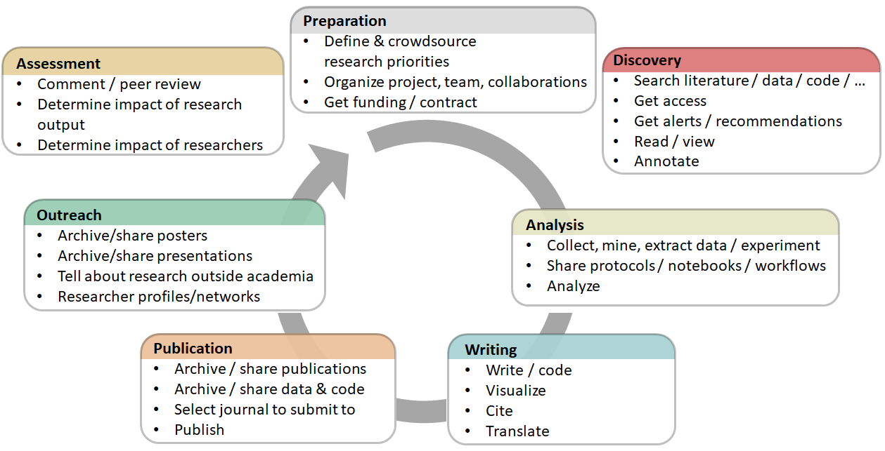

1. Ανοιχτές Έννοιες και Αρχές
Τι είναι;
Ανοικτή Επιστήμη είναι η επιστημονική πρακτική, μέσα από την οποία άλλα πρόσωπα εκτός της πρωτογενής έρευνας μπορούν να συνεργάζονται και να συνεισφέρουν, όπου τα ερευνητικά δεδομένα, οι σημειώσεις των εργαστηρίων και άλλες ερευνητικές διαδικασίες γίνονται ελεύθερα διαθέσιμες, υπό όρους, οι οποίοι επιτρέπουν την επαναχρησιμοποίηση, την αναδιανομή και την αναπαραγωγή της έρευνας και των δεδομένων και των μεθόδων που την υποστηρίζουν (FOSTER Open Science Definition). Με λίγα λόγια, η Ανοικτή Επιστήμη είναι μια διαφανής και προσβάσιμη γνώση που διανέμεται και αναπτύσσεται μέσω συνεργατικών δικτύων (Vicente-Sáez & Martínez-Fuentes 2018).
Η Ανοικτή Επιστήμη είναι συνυφασμένη με την αυξημένη αυστηρότητα, λογοδοσία και αναπαραγωγιμότητας για την έρευνα. Βασίζεται στις αρχές της συμπερίληψης, της δικαιοσύνης, της ισότητας και της από κοινού χρήσης και τελικά επιδιώκει να αλλάξει τον τρόπο με τον οποίο γίνεται η έρευνα, τους εμπλεκόμενους και τον τρόπο της αξιολόγησής της. Σκοπός της είναι να καταστήσει την έρευνα περισσότερο ανοιχτή στη συμμετοχή, στην επανεξέταση /αμφισβήτηση, στη βελτίωση και την (επανα) χρησιμοποίηση , ώστε να ωφεληθεί όλος ο κόσμος.
Υπάρχουν πολλοί ορισμοί της “ανοιχτότητας” σ΄ό,τι αφορά τις διάφορες πλευρές της επιστήμης. Ο ορισμός του OpenDefinition αναφέρει: "Τα ανοιχτά δεδομένα και περιεχόμενο μπορούν να χρησιμοποιηθούν ελεύθερα, να τροποποιηθούν και να μοιραστούν από οποιονδήποτε για οποιονδήποτε σκοπό". Η Ανοιχτή Επιστήμη περιλαμβάνει πλήθος πρακτικών, που συνήθως περιλαμβάνουν τομείς όπως η ανοικτή πρόσβαση στις δημοσιεύσεις (open access), τα ανοικτά ερευνητικά δεδομένα (open data), το ανοιχτό λογισμικό /τα εργαλεία ανοιχτού κώδικα (open source software), τις ανοικτές ροές εργασιών (open workflows), την Επιστήμη του Πολίτη (citizen science), τους ανοικτούς εκπαιδευτικούς πόρους (open educational resources) και τις εναλλακτικές μεθόδους αξιολόγησης της έρευνας, μεταξύ αυτών την ανοιχτή ομότιμη κρίση (open peer review) (Pontika et al., 2015). Pontika et al. (2015)
Pontika et al. (2015)
Οι στόχοι και οι παραδοχές στις οποίες βασίζεται η ώθηση για την εφαρμογή αυτών των ποικίλων πρακτικών έχουν αναλυθεί από τους Fecher & Friesike ([2013] (https://papers.ssrn.com/sol3/papers.cfm?abstract_id=2272036) ), οι οποίοι αναλύοντας τη βιβλιογραφία εντόπισαν πέντε μεγάλα ζητήματα ή «σχολές σκέψης». Αυτές είναι:
η Δημοκρατική Σχολή: Πιστεύοντας ότι υπάρχει άνιση κατανομή της πρόσβασης στη γνώση, ο τομέας αυτός ασχολείται με την ελεύθερη διάθεση των γνώσεων (συμπεριλαμβανομένων των δημοσιεύσεων και των δεδομένων) για όλους.
η Πρακτική Σχολή: Ακολουθώντας την αρχή ότι η δημιουργία της γνώσης γίνεται πιο αποτελεσματική μέσω της συνεργασίας και ενισχύεται μέσω της κριτικής, ο τομέας αυτός επιδιώκει να αξιοποιήσει τα αποτελέσματα του διαδικτύου συνδέοντας τους επιστήμονες και καθιστώντας τις ακαδημαϊκές μεθόδους διαφανείς.
η Σχολή της Υποδομής: Ο συλλογισμός της έχει ως εκκίνηση την υπόθεση ότι η αποτελεσματική έρευνα προϋποθέτει άμεσα διαθέσιμες πλατφόρμες, εργαλεία και υπηρεσίες διάδοσης και συνεργασίας.
η Δημόσια Σχολή: Με βάση την αναγνώριση ότι πραγματικές κοινωνικές επιπτώσεις προϋποθέτουν κοινωνική δέσμευση στην έρευνα και άμεσα κατανοητή επικοινωνία των επιστημονικών αποτελεσμάτων, ο τομέας αυτός επιδιώκει να κάνει το κοινό να συνεργαστεί για την έρευνα μέσω της επιστήμης των πολιτών και να καταστήσει ευκολότερη την κατανόηση της ακαδημαϊκής γνώσης με απλές περιλήψεις, κείμενα σε blogs και άλλες λιγότερο επίσημες επικοινωνιακές μεθόδους.
η Σχολή της Μέτρησης: Με την παραδοχή ότι οι παραδοσιακές μετρήσεις για την εκτίμηση της επιστημονικής απήχησης έχουν αποδειχθεί προβληματικές (όντας πολύ επικεντρωμένες στη δημοσιεύσεις, συχνά μόνο σε περιοδικά για παράδειγμα), αναζητούνται «εναλλακτικές μετρήσεις», οι οποίες να μπορούν να αξιοποιήσουν τις νέες δυνατότητες των ψηφιακά συνδεδεμένων εργαλείων για την παρακολούθηση και τη μέτρηση της απήχησης της επιστημονικότητας, μέσω δραστηριοτήτων που παλαιότερα δεν ήταν ορατές.
Σκεπτικό
Η Ανοιχτή Επιστήμη, όπως ορίστηκε νωρίτερα, συνεπάγεται πλήθος πιθανών διαρθρωτικών αλλαγών σε ό,τι αφορά τις ακαδημαϊκές πρακτικές, στην περίπτωση που η καθιερωμένη κουλτούρα είναι ιεραρχική και συντηρητική. Επιπλέον, ακόμη και όταν οι ερευνητές βλέπουν θετικά τους στόχους της Ανοιχτής Επιστήμης, ενδέχεται η αξία τους να μην τους είναι ακόμα προφανής, καθώς οι υφιστάμενοι μηχανισμοί κινήτρων δεν αντανακλούν ακόμη αυτή τη νέα κουλτούρα ανοιχτότητας και συνεργασίας. Κατά συνέπεια, προκειμένου να πειστούν οι ερευνητές για την ανάγκη να αλλάξουν τις πρακτικές τους, απαιτείται να γίνουν καλά κατανοητά όχι μόνο τα δεοντολογικά, κοινωνικά και ακαδημαϊκά οφέλη αλλά και οι τρόποι με τους οποίους η υιοθέτηση των πρακτικών της Ανοιχτής Επιστήμης θα τους βοηθήσει ουσιαστικά να επιτύχουν στο έργο τους. Αυτή η ενότητα θα περιγράψει μερικές από τις βασικές έννοιες και αρχές καθώς και τους παράγοντες και τις πρακτικές στην Ανοιχτή Επιστήμη κι επίσης τους τρόπους με τους οποίους αυτές εντάσσονται σε ένα ευρύτερο ερευνητικό οικοσύστημα.

Μαθησιακοί στόχοι
1.Κατανόηση των κοινωνικών, οικονομικών, νομικών και ηθικών αρχών και εννοιών στις οποίες βασίζεται η Ανοιχτή Επιστήμη.
2.Εξοικείωση με την ιστορία της Ανοιχτής Επιστήμης, καθώς και τις διαφορές και ποικιλομορφίες των σχετικών απόψεων στις διαφορετικές ερευνητικές κοινότητες, επιστημονικούς κλάδους και πολιτισμούς.
3.Ενημέρωση για τις εξελίξεις γύρω από την Ανοιχτή Επιστήμη και την προσωπική επιρροή που μπορεί αυτή να έχει για τους ερευνητές, την έρευνα και την κοινωνία γενικότερα.
Βασικά στοιχεία

Γνώσεις και δεξιότητες
Η Ανοικτή Επιστήμη είναι το κίνημα που συμβάλει στη διεύρυνση της προσβασιμότητα στα παράγωγα της επιστημονικής έρευνας - συμπεριλαμβανομένων των κωδικών, δεδομένων και οι ερευνητικων μελετών.
- Περιλαμβάνει πολλές διαφορετικές αλλά συχνά συνδεδεμένες πτυχές που επηρεάζουν ολόκληρο τον κύκλο της έρευνας, μεταξύ των οποίων τις ανοιχτές εκδόσεις (open access publishing), τα ανοιχτά δεδομένα (open data), το λογισμικό ανοιχτού κώδικα (open source software), τις ανοιχτές σημειώσεις (open notebooks), την ανοιχτή ομότιμη κρίση (open peer review), την ανοιxτή διάδοση (open dissemination) και τα ανοιχτά υλικά (open materials) (βλ. γλωσσάριο ορισμών).
Η ιστορία της Ανοιχτής Επιστήμης και τα κίνητρα πίσω από το κίνημα.
Οι ρίζες των ακαδημαϊκών εκδόσεων τοποθετούνται στον 17ο αιώνα όταν ξεκίνησαν τα πρώτα ακαδημαϊκά περιοδικά.
Η αύξηση των κινήτρων για την ανταλλαγή πόρων μεταξύ των ερευνητικών κλάδων καθώς και αυξημένη διαφάνεια για μεγαλύτερη αποτελεσματικότητα, αυστηρότητα, λογοδοσία, βιωσιμότητα για τις μελλοντικές γενιές και αναπαραγωγιμότητα.
Τα ζητήματα δεοντολογίας όπου η αυξημένη διαφάνεια μπορεί να μειώσει την απάτη, τη χειραγώγηση των δεδομένων και την επιλεκτική αναφορά των αποτελεσμάτων.
Η σημερινή κατάσταση προέκυψε από την πίεση των ερευνητικών ακαδημιών και των κυβερνήσεων για την ανοιχτή διάθεση της δημόσια χρηματοδοτούμενης έρευνας, συχνά με σκοπό την επιτάχυνση της κοινωνικής ή και οικονομικής ανάπτυξης και της καινοτομίας.
Τα αποτελέσματα από δημόσια χρηματοδοτούμενη έρευνα πρέπει να είναι δημόσια διαθέσιμα.
Η αλλαγή κουλτούρας στην έρευνα και μεταξύ των ερευνητών είναι αναγκαία.
Η υιοθέτηση διαδικτυακών εργαλείων και τεχνολογιών διευκολύνουν την επιστημονική συνεργασία.
Διαφορές και ομοιότητες στις πρακτικές, στις αρχές και στις κοινότητες της Ανοιχτής Επιστήμης.
o Είναι γενικά παραδεκτό ότι η Ανοιχτή Επιστήμη οδηγεί στην αύξηση της απήχησης, η οποία σχετίζεται με την ευρύτερα κοινή χρήση και επαναχρησιμοποίηση (π.χ. το λεγόμενο «πλεονέκτημα αναφοράς της ανοιχτής πρόσβασης» - «open access citation advantage»).(https://sparceurope.org/what-we-do/open-access/sparc-europe-open-access-resources/open-access-citation-advantage-service-oaca/oaca-list/)"\).
Η Ανοιχτή Επιστήμη μπορεί να αυξήσει την εμπιστοσύνη στην επιστήμη και στην αξιοπιστία των επιστημονικών αποτελεσμάτων.
Ανοιχτή Επιστήμη και σχέση με την άδεια χρήσης και τα ζητήματα πνευματικής ιδιοκτησίας.
- Συνήθως, τα αποτελέσματα ανοιχτής έρευνας έχουν ανοιχτές άδειες προκειμένου αφενός να μεγιστοποιηθεί η επαναχρησιμοποίησή τους, και αφετέρου επιτρέποντας στον δημιουργό να διατηρήσει την ιδιοκτησία και να πάρει αναγνώριση για το έργο του.
Ερωτήσεις, εμπόδια, και συχνές παρανοήσεις
Ε: Ποια είναι η διαφορά μεταξύ Ανοιχτής Επιστήμης και ‘επιστήμης’;
Α: H Ανοιχτή Επιστήμη αφορά την πραγματοποίηση της παραδοσιακής επιστήμης με περισσότερη διαφάνεια σε διάφορα στάδια, για παράδειγμα με ανοιχτή ανταλλαγή κώδικα και δεδομένων. Πολλοί ερευνητές το κάνουν ήδη, αλλά δεν το αποκαλούν Ανοιχτή Επιστήμη.
Ε: H Ανοιχτή Επιστήμη εξαιρεί τις Ανθρωπιστικές και τις Κοινωνικές Επιστήμες;"
Α: Όχι, ο όρος Ανοιχτή Επιστήμη περιλαμβάνει όλες τις επιστήμες. Μάλιστα, συμβαίνει μερικές φορές η Ανοιχτή Επιστήμη να αναφέρεται ευρύτερα ως «Ανοιχτή Έρευνα» («Open Research») ή «Ανοιχτή Ακαδημαϊκή Γνώση» («Open Scholarship») ώστε να συμπεριλαμβάνει περισσότερους κλάδους, αρχές και πρακτικές. Ωστόσο, η Ανοιχτή Επιστήμη είναι ένας ευρέως χρησιμοποιούμενος όρος σε πολλαπλά επίπεδα, επομένως είναι λογικό να το υιοθετήσουμε για επικοινωνιακούς σκοπούς, με την προϋπόθεση ότι περιλαμβάνει όλους τους επιστημονικούς κλάδους.
Ε: "Η Ανοιχτή Επιστήμη οδηγεί σε κατάχρηση ή παρερμηνεία της έρευνας;"
Α: Όχι, η εφαρμογή των αρχών της Ανοιχτής Επιστήμης είναι στην πραγματικότητα μια εγγύηση κατά της κακής χρήσης ή παρερμηνείας. Η διαφάνεια καλλιεργεί πίστη και εμπιστοσύνη και επιτρέπει σε άλλους να ελέγχουν και να επικυρώνουν την ερευνητική διαδικασία.
Ε: " Η Ανοιχτή Επιστήμη θα οδηγήσει σε πληροφοριακή υπερφόρτωση;"
Α: Είναι προτιμότερο να έχουμε πάρα πολλές πληροφορίες και να τις διαχειριζόμαστε, παρά να έχουμε πολύ λίγες και να ζούμε με τον κίνδυνο να λείπουν σημαντικά στοιχεία. Άλλωστε, υπάρχουν τεχνολογίες όπως το RSS, η μηχανική μάθηση και η τεχνητή νοημοσύνη που διευκολύνουν τη συγκέντρωση περιεχομένου.
Μαθησιακοί στόχοι
Δυνατότητα επεξήγησης του πυρήνα που διέπει τις ακαδημαϊκές, οικονομικές και κοινωνικές αρχές και έννοιες που υποστηρίζουν την Ανοιχτή Επιστήμη και γιατί είναι σημαντική στο επίπεδο των ευρύτερων επιπτώσεων.
Ανάπτυξη της κατανόησης των πολυάριθμων διαστάσεων της Ανοιχτής Επιστήμης και μερικών εργαλείων και πρακτικών που σχετίζονται με αυτό.
Εξοικείωση με την παρούσα κατάσταση στην Ανοιχτή Επιστήμη και την ποικιλομορφία των προοπτικών που περιλαμβάνει.
Περαιτέρω διάβασμα
Open Science: one term, five schools of thought (Fecher and Friesike, 2014).
When will ‘Open Science’ become simply ‘science’? (Watson, 2015).
Open innovation, Open Science, open to the world - a vision for Europe (2016)
Do you speak Open Science? Resources and tips to learn the language (Masuzzo and Martens, 2017).
Open innovation, Open Science, open to the world : reflections of the Research, Innovation and Science Policy Experts (RISE) High Level Group (2017)